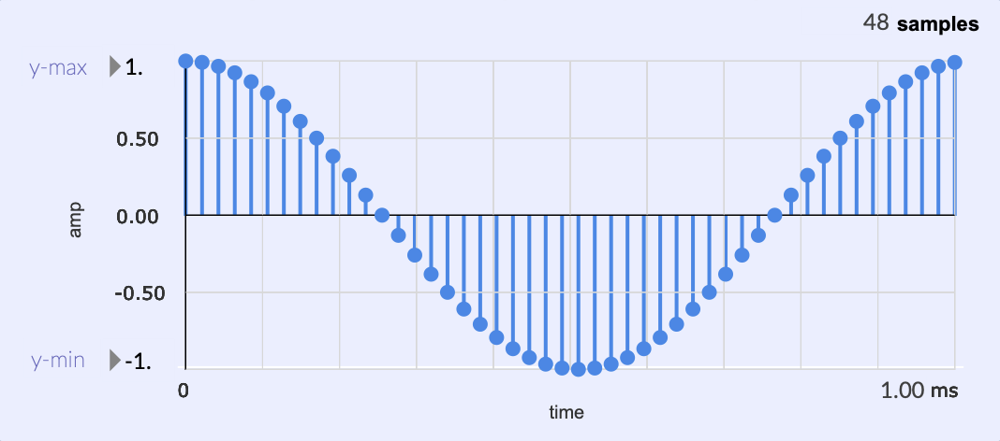

Understanding Wavetable Synthesis
Let’s understand the concept of wavetable synthesis by designing a sine wave oscillator that uses a 64 sample wavetable of one cycle.
Here is the general formula to generate a sinusoid:
s(t) = Asin(2\pi ft + \phi)
Where:
- A: Amplitude, the peak deviation of the function from zero.
- f: frequency, the number of oscillations (cycles) that occur each second of time.
- \phi: phase, specifies (in radians) where in its cycle the oscillation is at t = 0.
- t: a unit of time
Having this formula, we are able to any point in time t.
Remember that in digital audio, time passes in sample frames.
Samples are related to time by a sampling rate (how many discrete values are produced per second).
We can compute time in seconds:
t = \frac{n}{f_s}
Where:
- n: sample index, an integer, representing where in the sequence a sample occurs.
- f_s: sampling rate, the number of samples taken per second. Where f_s = \frac{1}{T_s}. T_s is the sampling period (the time interval). For example, with a sampling period of 0.25 of a second (we are storing a value every 1/4th second), we can calculate the sampling rate by taking the inverse (1/0.25). This will give us a value of 4 as the sampling rate.
With a sampling rate of 44.1k, we can find t by trying different values of n.
n = 5
5 / 44100 = 0.00011338 seconds
n = 22050
22050 / 44100 = 0.5 seconds
n = 114660
114660 / 44100 = 2.598 seconds
For a simple wavetable synth program, we can ignore the phase since it will always start at 0.
Here is the formula rewritten:
s[n] = Asin(2\pi f * \frac{f_n}{f_s})
A rabbit hole topic is looking into the question of how computers
calculate the value of sin() or cos().
One common method is using Taylor Expansion. But my point is that if we want to generate a sine wave tone and are using a sample rate of 44.1k, that means we would be doing this calculation 44,100 times per second, which can be computationally expensive. Modern computers can handle it, but it is a waste of resources.
Instead, we could just calculate one cycle, store the values in a table of a small size, and then use that table to lookup/approximate values for any frequency wave.
Wavetable Definition
A wavetable is an array in memory that stores a fragment of a waveform

A plot of the cosine wave values from a
wavetable.
 In Max/MSP, we use a buffer~ object, in this case it is
48 samples long, and a cosine function is applied.
In Max/MSP, we use a buffer~ object, in this case it is
48 samples long, and a cosine function is applied.
 The data in the wavetable. The floating-point
numbers are the amplitude levels that are stored.
The data in the wavetable. The floating-point
numbers are the amplitude levels that are stored.
Phase vs. Table Index Ratio
Remember that the period of a sine wave form is exactly 2\pi radians long.
If we store one period of a sine wave in a table, we can compute the index that corresponds to a specific phase, by using the ratio below.
The ratio of the phase \theta relative to the period is exactly the same as the table index relative to the table size:
\frac{k}{L} = \frac{\theta}{2\pi}
Where:
- L: Length of Wavetable
- k: wavetable index (must be between 0 - L)
- \theta: phase in radians (must be between 0 - 2\pi)
We can find the value of k:
k = \frac{\theta L}{2\pi}
If we have a wavetable that is 64 samples long, and we want to know the index k of a wave with a phase of 3.14, then:
- L = 64
- \theta = 3.14
k = \frac{3.14 * 64}{2\pi}
k = \frac{200.96}{2\pi}
k = 32
In this case we got a result that is exactly an integer, but in most cases k will be between two sample points. For example, with a phase value of 3.0, we get a k value of 30.573.
There are several strategies we can use:
We could use truncation, which is just removing the decimal information. A value of 30.573 would just turn to 30. This is the same as using the
floor()function.We could also round k to the nearest integer. 30.573 would turn to 31.
We could use linear interpolation, which involves the weighted sum of the two values in the wavetable that are nearest.
Stepping
Through a Wavetable & Using floor() (0th Order
Interpolation)
The easiest implementation is to use the floor()
function for truncating the k value to an integer.
But first, in order to hear our sine tone, we have to step through the wavetable a certain amount at the sampling rate to hear our desired frequency tone. This is called the index increment, but in order to find that value, we must first find the phase increment, which is the amount in radians to increment the phase each sample frame.
We can calculate the phase increment by subtracting the phase of the sample frame after a current sample frame with the phase of the current sample frame:
Remember that what is inside the parantheses of sin() in
s[n] = Asin(\frac{2\pi fn}{f_s}) is
considered the phase in radians.
\theta = 2\pi f * \frac{n}{f_s} = \frac{2\pi fn}{f_s}
\theta_{inc}(f) = \frac{2\pi f(n+1)}{f_s} - \frac{2\pi fn}{f_s}
\theta_{inc}(f) = \frac{2\pi f}{f_s}
Now with the phase increment \theta_{inc} we can calculate the index increment k_{inc} using the ratio described before that we used to calculate for k (k = \frac{\theta L}{2 \pi})
k_{inc} = (k + 1) - k
(k + 1) - k = \frac{(\phi_x + \theta_{inc}) L}{2\pi} - \frac{\phi_x L}{2\pi}
Subtract:
\frac{\theta_{inc} L}{2\pi}
Replace \theta_{inc}:
\frac{\frac{2\pi f}{f_s} L}{2\pi}
2\pi cancels out:
\frac{1}{f_s} * f * L
Which leaves us with:
k_{inc} = \frac{fL}{f_s}
Where:
- f: the desired frequency in Hz. If you want to play an A4 note, the f value would be 440.
NOTE
In the Max/MSP tutorials, they talk about how the cycle~
MSP object is a 512 sample wavetable (maybe 16384 now). They use the
formula where I is the index increment,
f is the desired frequency, L is the sample length of the wavetable, and
R is the audio sampling rate.
Also noted is that cycle~ uses linear interpolation.
I = \frac{fL}{R}
Where:
- R is f_s, the sampling rate
- I is index increment
Other MSP objects use more computationally expensive polynomial interpolation.
Here is a python implementation of a wavetable oscillator program
using the floor() method:
import numpy as np
import scipy.io.wavfile as wav
def main():
sample_rate = 44100
f = 440
t = 3
wavetable_length = 64
wave_table = np.zeros((wavetable_length,))
output = np.zeros((t * sample_rate,))
# iterate through wavetable to generate values based on n
for n in range(wavetable_length):
wave_table[n] = np.sin(2 * np.pi * n / wavetable_length)
index = 0
# calculate the index increment
index_increment = f * wavetable_length / sample_rate
# iterate through .wav file buffer (44.1k samples * 3)
for n in range(output.shape[0]):
# the wave sample value written in output array
output[n] = wave_table[int(np.floor(index))]
# increment index
index += index_increment
# keep index within wavetable size
index %= wavetable_length
# creates a 3 second .wav file of a sine tone
wav.write("sine440Hz.wav", sample_rate, output.astype(np.float32))
if __name__ == "__main__":
main()When printing out the value of the index increment, the program returns:
0.6385487528344671To recreate this same program in Max/MSP gen~, let’s first confirm we get the same value.
Here we calculate the index increment:

We are following the same equation where we
multiply table size and frequency, then divide that result with the
sampling rate.

We are using the same parameters. We have a
buffer/wavetable that is 64 samples long, filled with a cosine function,
and we want a tone with a frequency of 440 Hz.
The next step would be to accumulate that index increment to hold the value k.

The accum operator continues to
increment by the index increment. The output will be our k
Now we can go ahead and do a table lookup. We can use the
peek operator, but first we must round it down to convert
the value into an integer, and we must keep it within the 0-63
range.

outlet value of the wrap operator
will be the wavetable index.
This truncation method with the floor operator is
0th-order interpolation. Also known as Zero-Order Hold
(ZOH).
Here is the final gen~ patch:

We are using the peek operator to
lookup the value corresponding to the wavetable index.
Here is a 1 ms plot of the waveform:

You can see that the sinusoid is recognizable.
Notice that there is a slight staircase pattern.

The spectrogram shows the spectral consequence of
the choppy waveform. It results in high-frequency partials that cause an
annoying ringing.

The 440 Hz tone is present. Along with a lot of
aliasing.
Linear Interpolation
Let’s do a linear interpolation implementation of both the python and gen~ programs. This is also known as 1st-order interpolation.

Graphic from a wikipedia article.
The problem is this:
We have two known points (x_0, y_0) and (x_1, y_1).
We want to know the value of y of an x that is in-between the two known points. The values in between these two points are in a straight line. This is why it is called linear interpolation.
This algorithm can be understood as a weighted average.
Say:
- x_o: 1, y_0: 1
- x_1: 3, y_1: 5
If I want to know the value of y halfway between these two points, then I know I can just find the average. Since I know that it is halway, I know I can just multiply the sum by 0.5.
\frac{1 + 5}{2} = 3
By weight, what we mean is that y_0 and y_1 both have different amounts of weight (influence) depending on how close our desired point is to them. In the above example, both points had an equal amount of weight of 0.5.
(1 * 0.5) + (5 * 0.5)
If our point is closer to (x_1, y_1), then it will have more weight, and consequently, (x_o, y_o) will have less weight. Both weight values will equal to 1.
Say our desired point is 75% far along the line. This means that it needs to travel 25% more of the line to make it to (x_1, y_1).
Then:
(1 * 0.25) + (5 * 0.75) = 4
The question is, how do you find the weight values?
Well, we already have an index k that is in-between two samples. If k is 30.65, then the value at index 31 has a weight of 0.65, and the value at index 30 has a weight of 0.35.
(table[n] * 0.35) + (table[n+1] * 0.65) = interpolated\_value
Here is the lerp() function in python:
def lerp(wave_table, index):
truncated_index = int(np.floor(index))
next_index = (truncated_index + 1) % wave_table.shape[0]
next_index_weight = index - truncated_index
truncated_index_weight = 1 - next_index_weight
return (
truncated_index_weight * wave_table[truncated_index]
+ next_index_weight * wave_table[next_index]
)output[n] = lerp(wave_table, index)Generating a 4 cycle wavetable
My goal is to generate four different waveforms and place them all in a single buffer. This buffer will be our wavetable. I want a sine wave, triangle wave, saw wave, and a square wave.
Methods in Max/MSP
There are many ways of doing this. The following will be just a few examples. I will use buffers with a size of 64 samples.
Sine Wave
We are storing this cycle in a buffer called sin.

sending the message “fill sin” will fill the
buffer with a single cycle sine wave.
Triangle Wave

This method seems a bit complicated. It divides
the current index with the total length, then scales it from 0. - 1. to
-1. to 1. Any negative number result will result in a positive slope,
while a positive result in a negative slope.
Saw Wave

Generate a square wave and then apply a triangle
window function.
Square Wave

A square wave is generated with a simple if
statement.
Concatenating the Buffers to Create wavetable.wav

Max patch to concatenate all buffers together. The
“write” message will open your os file manager to save the buffer into a
file. I will save it with the name wavetable.wav
Cycling Through the Wavetable
First, we must create our buffer and load our wavetable.

The @file parameter allows you to write the desired
file to load into the buffer.